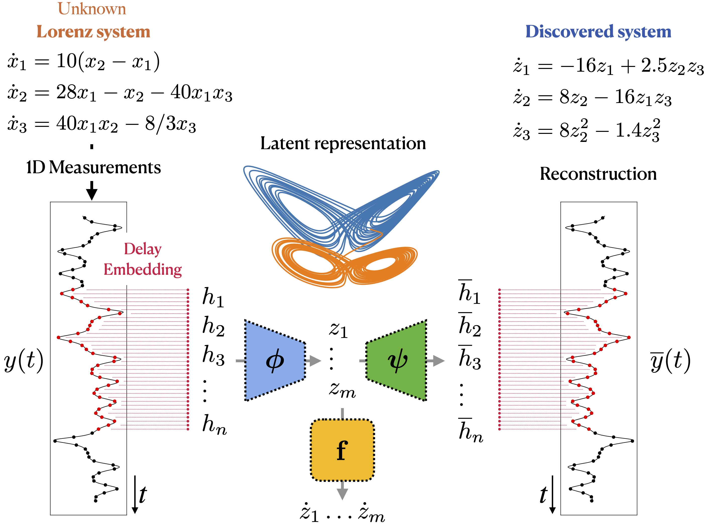
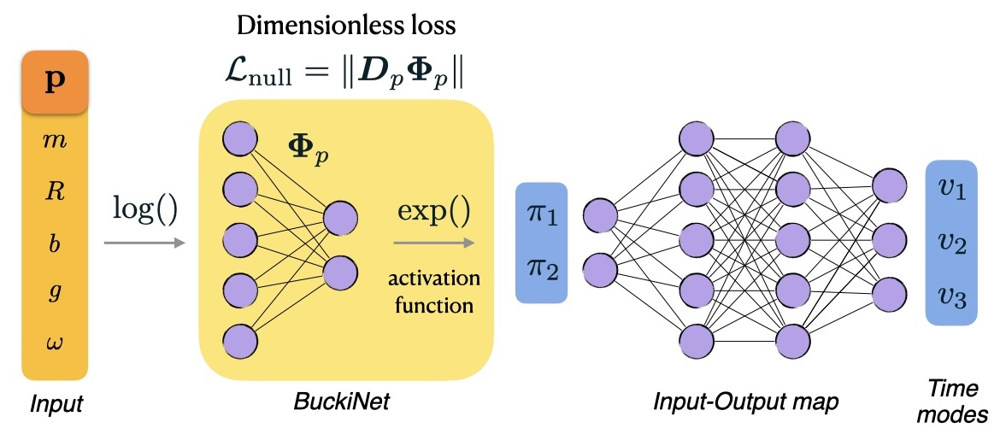
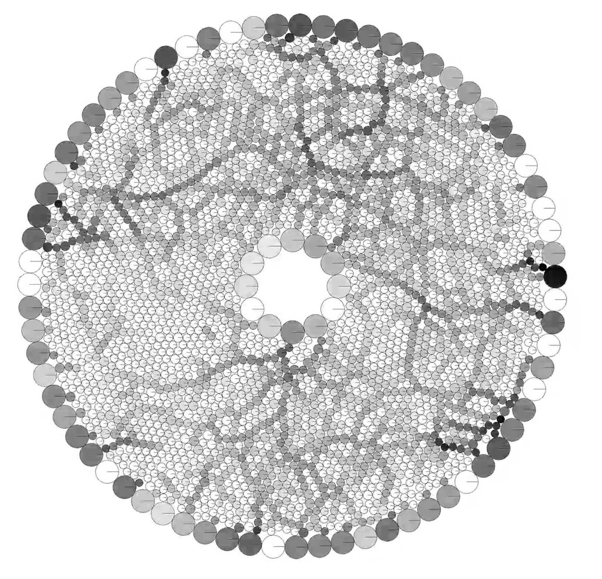
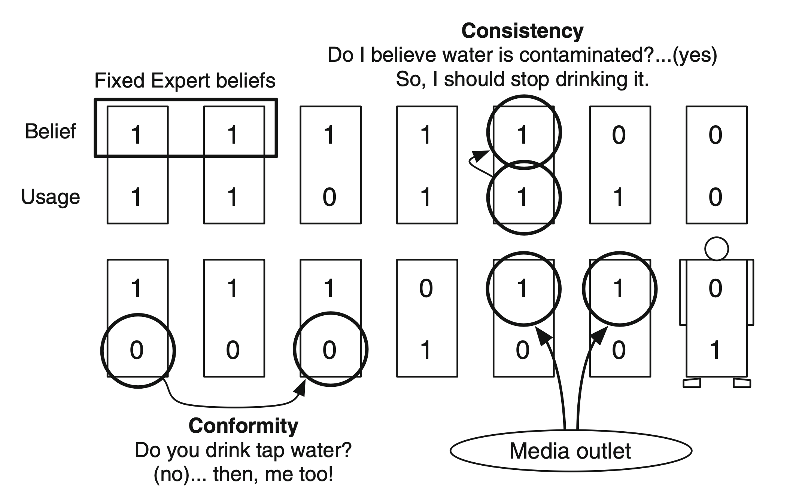

Data-Driven Modeling Lab DDM
The intersection of complex systems and artificial intelligence. We develop algorithms that extract governing equations directly from data while keeping the models interpretable.
Our research combines computational methods, applied mathematics, and machine learning to address scientific modeling challenges. We work on discovering governing equations from measurement data, incorporating physical dimensions into learning architectures, multi-scale modeling of granular materials, and agent-based simulation of social systems. We publish in applied math, computational science, and physics venues; we teach the methods in the ML for Science course sequence.
research topics

Discovering equations from partial measurements
dynamical systems
deep learning
SINDy
system identification
Using delay embeddings and autoencoders to jointly discover governing equations and their latent variables from high-dimensional or partial time-series observations. Demonstrated on Lorenz, Rössler, Lotka-Volterra, and a chaotic waterwheel experiment.

Dimensionally consistent learning
dimensional analysis
Buckingham Pi
physics-informed ML
Building physical units and dimensional groups directly into neural architectures via constrained optimization and BuckiNet. Improves generalization across scales and preserves physical interpretability. Applied to bead on rotating hoop, laminar boundary layer, and Rayleigh-Bénard convection.

Multi-scale modeling of complex materials
granular materials
multi-scale
stochastic PDEs
uncertainty quantification
Data-driven multi-scale modeling of granular materials such as sand and powders. Explores how microstructural heterogeneity drives macroscopic behavior including reaction initiation and hotspot formation. Bridges grain-scale physics with continuum descriptions.

Social dynamics with agent-based models and LLMs
agent-based modeling
LLMs
social dynamics
graphs
Modeling social behavior with agent-based frameworks embedded in graph structures, and using large language models to instantiate agent decision-making. Applications include socio-hydrological hybrid modeling for water resource management.
selected publications
-
Discovering governing equations from partial measurements with deep delay autoencoders
Bakarji, Champion, Kutz, Brunton · Proc. Roy. Soc. A, 2023
-
Dimensionally consistent learning with Buckingham Pi
Bakarji, Callaham, Brunton, Kutz · Nature Computational Science, 2022
-
Data-driven discovery of coarse-grained equations
Bakarji, Tartakovsky · Journal of Computational Physics, 2021
-
Microstructural heterogeneity drives reaction initiation in granular materials
-
On the use of reverse Brownian motion to accelerate hybrid simulations
-
Agent-based socio-hydrological hybrid modeling for water resource management
All publications on Scholar
team
-
Joseph Bakarji
Director, Assistant Professor
jb50@aub.edu.lb
-
Lama Sleem
MS Computational Science, co-supervised with Dr. Arij Daou
lks09@mail.aub.edu
-
Issar Amro
MS Computational Science, co-supervised with Dr. Sara Najem
iza04@mail.aub.edu
-
Oussama Ibrahim
MS Computational Science, co-supervised with Dr. Sara Najem
ohi00@mail.aub.edu
-
Joe Germany
BS Physics and Applied Math, undergraduate researcher, co-supervised with Dr. Sara Najem
personal site
All team
funders and partners
Artificial Intelligence, Data Science, and Computing Hub
AI Hub, AUB